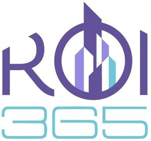

Trade Mark Journal No.2025/045 7 November 2025
WO0000001870587 (35,36)
Office of origin: Bulgaria
Date of International Registration:3 April 2025
Date of designation in the UK:
3 April 2025

The mark contains the colours purple, light purple, turquoise and white.
Purple, light purple, turquoise and white - for the word and figurative elements.
International priority date claimed: 7 October 2024
(Bulgaria)
(175084)
- Class 35
- Real estate marketing; arranging and conducting of real estate auctions; advertising of commercial or residential real estate; real estate auctions; administrative assistance in responding to calls for tenders; administrative processing of purchase orders; outsourced administrative management for companies; administration of consumer loyalty programs; business management of hotels; updating and maintenance of information in registries; updating of advertising material; cost price analysis; business auditing; business efficiency expert services; business intermediary services relating to the matching of potential private investors with entrepreneurs needing funding; business management for freelance service providers; business management of reimbursement programmes for others; interim business management; public relations services; document reproduction; development of advertising concepts; payroll preparation; compilation of statistics; invoicing; market analysis; business investigations; economic forecasting; web indexing for commercial or advertising purposes; human resources consultancy; advisory services for business management; business organization consultancy; business management consultancy; consultancy regarding public relations communication strategies; consultancy regarding advertising communication strategies; corporate communications services; marketing; personnel recruitment; sponsorship search; sales promotion for others; online advertising on a computer network; organization of exhibitions for commercial or advertising purposes; auctioneering services; organization of trade fairs for commercial or advertising purposes; rental of office machines and equipment; rental of office equipment in co-working facilities; rental of billboards [advertising boards]; publicity material rental; rental of advertising time on communication media; rental of advertising space; outsourcing services [business assistance]; commercial or industrial management assistance; providing commercial information and advice for consumers in the choice of products and services; demonstration of goods; presentation of goods on communication media, for retail purposes; telephone answering for unavailable subscribers; production of advertising films; opinion polling; market research; business research; professional business consultancy; psychological testing for the selection of personnel; publication of publicity texts; radio advertising; distribution of samples; dissemination of advertising matter; direct mail advertising; registration of written communications and data; advertising; outdoor advertising; promotion of goods and services through sponsorship of sports events; bill-posting; advertising by mail order; television advertising; secretarial services; systemization of information into computer databases; procurement services for others [purchasing goods and services for other businesses]; shorthand; accounting; compilation of information into computer databases; drawing up of statements of accounts; compiling indexes of information for commercial or advertising purposes; word processing; telemarketing services; transcription of communications [office functions]; provision of commercial information; business appraisals; business inquiries; commercial intermediation services; commercial administration of the licensing of the goods and services of others; data search in computer files for others; business project management services for construction projects; computerized file management; business management of performing artists; negotiation of business contracts for others; market intelligence services; media relations services; appointment reminder services [office functions]; tax filing services; competitive intelligence services; commercial lobbying services; appointment scheduling services [office functions]; layout services for advertising purposes; import-export agency services; commercial information agency services; advertising agency services; employment agency services; negotiation and conclusion of commercial transactions for third parties; price comparison services; financial auditing; photocopying services.
- Class 36
- Accommodation bureaux (real estate property); estate agency; real estate administration; administration of financial affairs relating to real estate; real estate time-sharing; real estate insurance services; capital investment in real estate; real estate investment; investment advisory services relating to real estate; computerised information services relating to real estate; real estate consultancy; real estate consultancy; advisory services relating to real estate ownership; loan services for property investment; real estate syndication; real estate appraisal; provision of real estate loans; provision of finance for real estate development; property leasing [real estate property only]; rental of real estate; assessment and management of real estate; real estate appraisal; real estate appraisal; appraisals for insurance claims of real estate; real estate appraisal; real estate appraisal; real estate investment planning; estate planning [financial]; real estate selection and acquisition [on behalf of others]; provision of information relating to the property market [real estate]; providing real estate information relating to property and land; providing information relating to real estate affairs, via the Internet; consultancy in the purchasing of real estate; provision of finance for real estate development; real estate procurement for others; research services relating to real estate acquisition; real estate equity sharing; collection of debt on real estate rental; real estate investment advice; corporate real estate advisory services; assisting in the acquisition of and financial interests in real estate; commercial real estate agency services; real estate management; management services for real estate investment; real estate and property management services; management services for real estate investment; arranging of loan agreements secured on real estate; arranging of shared ownership of real estate; arranging the provision of finance for real estate purchase; real estate escrow services; real estate trustee services; real estate services related to management of property investments; real estate appraisal; real estate settlement services [financial services]; real estate listing services for housing rentals and apartment rentals; estate management services relating to transactions in real property; real estate management services relating to housing estates; real estate management services relating to industrial premises; real estate management services relating to office premises; real estate management services relating to residential buildings; real estate management services relating to retail premises; real estate management services relating to shopping malls; real estate management services relating to entertainment venues; real estate management services relating to commercial buildings; estate agency services for sale and rental of business premises; real estate agency services for the rental of buildings; real estate agency services relating to the purchase and sale of buildings; real estate agency services for the leasing of land; real estate agency services relating to the purchase and sale of land; estate agency services for sale and rental of buildings; real estate lending services; estate planning [financial]; real estate services; real estate financing; financing of real estate development projects; financial valuation of freehold property; real estate appraisal; financial brokerage services for real estate; financial services for the purchase of real estate; real estate financing; financial services relating to real estate property and buildings; financing services relating to real estate development; financial consultancy relating to real estate investment; financial valuation of personal property and real estate; building management; insurance of buildings; rental of buildings; financial valuations relating to the design of buildings; rental of buildings; apartment house management; financial management of building projects; rental of buildings; home contents insurance; agencies or brokerage for renting of buildings; financial management of building occupancy expenses; financial management of building renovation projects; providing information relating to the rental of buildings; real estate management services relating to building complexes; insurance for offices; rental of offices [real estate]; rental of office space; rental of offices [real estate]; processing of payments for building societies; financial valuations relating to the surveying of buildings; provision of finance for civil engineering constructions; rent collection; provision of finance for hire-purchase; estate management; valuation of property; insurance for property owners; domestic property finding services; collection of non-domestic taxes; valuations and financial appraisals of property; property investment banking services; advice relating to mortgages for residential properties; real estate appraisal; provision of finance for real estate development; arranging of leases for the rental of commercial property; rental of real estate and property.
DENISLAV SERGEEV GEORGIEV
Representative: KOSTADIN MANEV, MANEV AND PARTNERS,, 73, Patriarh Evtimii Blvd., Floor 1, BG-1463 Sofia, BULGARIA